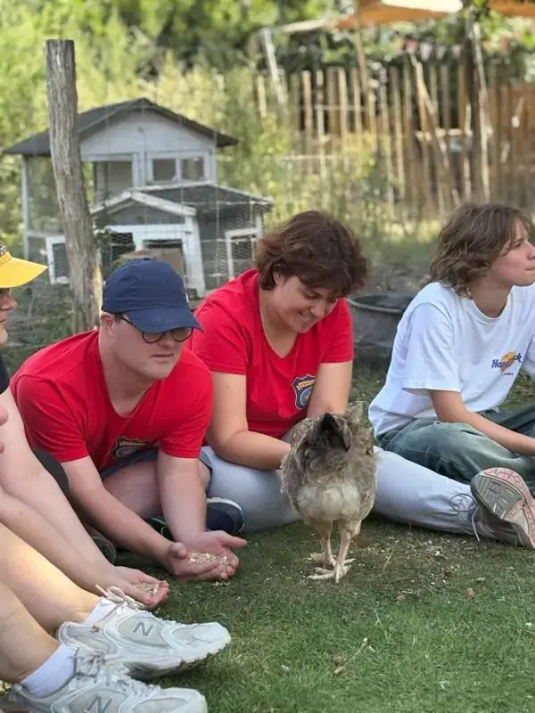

Kinderboerderij in Gent
Een kinderboerderij aan de rand van Gent, waar je echt mag meehelpen
Bij Boer Gilles ligt in Afsnee, een rustige deelgemeente van Gent tussen de Leie en de velden. Vanuit het centrum fiets je hier in nog geen kwartier naartoe. Geen kinderboerderij met hekjes en bordjes, wel een echte boerderij waar je de dieren voert, borstelt en leert kennen.
Wie je hier tegenkomt
Geitjes, schapen, pony's, een miniatuurpaardje, vijf varkentjes, konijnen, cavia's, kippen, eenden, ganzen, katjes en een Griekse landschildpad. Ze hebben allemaal een naam, en de kinderen leren die snel.
In de lente zijn er lammetjes en geitjes, in de zomer lopen de kuikens rond, in de herfst en winter is er hooi te geven en stro te spreiden. Er is altijd iets te doen.

Zo kan je langskomen
- Met het gezin op bezoek. Op afspraak, elke dag tussen 8 en 18 uur. Een bezoek duurt ongeveer een uur, en na afloop geef je zelf een vrije bijdrage aan de vzw.
- Een verjaardagsfeestje. Drie uur feest tussen de dieren, met een rondleiding, buiten spelen en desgewenst pannenkoeken. Vanaf €225.
- Kampjes in de vakanties. Een hele week of losse dagen op de boerderij, met een verse, warme lunch. In de krokus-, paas-, zomer-, herfst- en kerstvakantie.
- Met de klas. Een halve of volledige dag voor kleuters en lagere school: voeren, verzorgen en observeren.
Waarom op afspraak?
Omdat de dieren rust nodig hebben, en omdat ik tijd wil maken voor wie komt. Zo sta je niet tussen drukte, maar met je handen in het stro naast een geitje dat je komt snuffelen. Kinderen die even vertragen, zien veel meer.
Boer Gilles
Praktisch
- Adres: Goedingenstraat 11, 9051 Afsnee (Gent). Navigeer naar dit nummer, dan kom je aan de weide uit.
- Fiets: vanuit het centrum van Gent nog geen kwartier.
- Bus: halte Broekkantstraat, vlakbij de boerderij.
- Aantrekken: kleren die vuil mogen worden en laarzen. We zijn bijna altijd buiten.
Veelgestelde vragen
Kan ik zomaar langskomen?
Nee, alles gebeurt op afspraak. Een moment kies je zelf in mijn agenda.
Vanaf welke leeftijd is het leuk?
Voor een bezoek met het gezin is elke leeftijd welkom. Voor de kampjes moeten kinderen zindelijk zijn en zelf hun schoenen kunnen aandoen.
Wat als het regent?
Dan gaan we gewoon naar buiten, met laarzen en een regenjas. Er is een overdekte plek met strobalen om te schuilen.
Wat kost een bezoek?
Een bezoek op afspraak werkt met een vrije bijdrage voor de vzw. Feestjes, kampen en schoolbezoeken hebben een vaste prijs, die vind je op elke pagina.